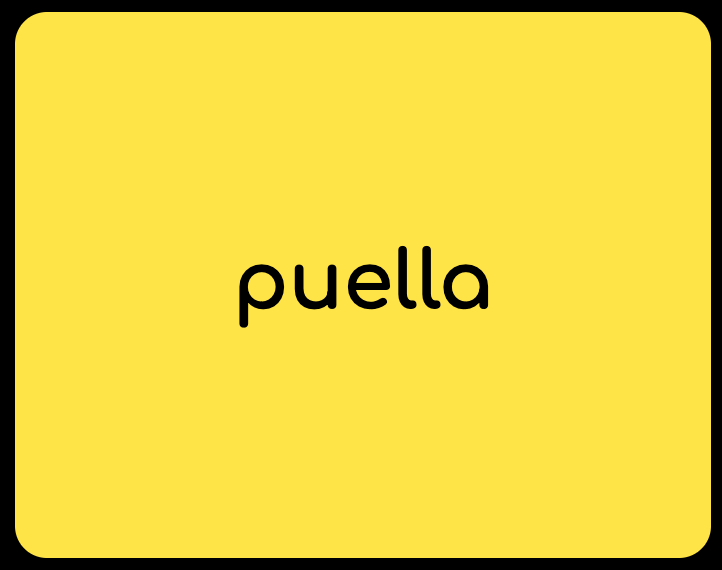
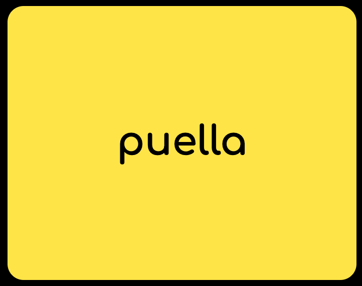

Frequently Asked Questions
The cards are color-coded by parts of speech:
- Verbs
- Nouns & Pronouns
- Prepositions
- Adjectives
- Adverbs
- Conjunctions
- Interjections
Yes! I'm glad you asked!
→Essential components of an English sentence (nouns, pronouns, and verbs) are warm colors to grab your attention. You need a noun or pronoun coupled with a verb to make a complete sentence.
→Non-essential modifiers are cool colors (adjectives and adverbs). You do not need adjectives and adverbs to make complete sentences, but they sure help make it more interesting.
→Like adjectives and adverbs, prepositions are non-essential and therefore highlighted in a cool color; you do not need a preposition to form a complete sentence. Prepositions are green because they show the relationship between nouns, and green is a color tangential to yellow.
→Conjunctions are brown because they are building blocks that link together words, phrases, and clauses. Think of a wood frame of a house.
→Interjections are white because they stand separate from the subject and predicate.
→Essential components of an English sentence (nouns, pronouns, and verbs) are warm colors to grab your attention. You need a noun or pronoun coupled with a verb to make a complete sentence.
- Example
-
puella ambulat .
The girl walks.
- Example
-
ambulat .
She walks.
- Example
-
ambulat .
She walks.
Tip: While I will never assign color-coding assignments, consider highlighting verbs orange on translation worksheets at the minimum.
→Non-essential modifiers are cool colors (adjectives and adverbs). You do not need adjectives and adverbs to make complete sentences, but they sure help make it more interesting.
- Example
-
puella pulchra ambulat lentē .
The pretty girl walks slowly.
→Like adjectives and adverbs, prepositions are non-essential and therefore highlighted in a cool color; you do not need a preposition to form a complete sentence. Prepositions are green because they show the relationship between nouns, and green is a color tangential to yellow.
- Example
-
puella sub arbore ambulat .
The girl walks under a tree.
→Conjunctions are brown because they are building blocks that link together words, phrases, and clauses. Think of a wood frame of a house.
- Example 1
-
puella et puer ambulant .
The girl and boy walk. - Example 2
-
puella ambulat sed puer currit .
The girl walks, but the boy runs.
Tip: When a conjunction joins two clauses, draw a vertical line before the conjunction to make sure you translate each clause with the right verb.
→Interjections are white because they stand separate from the subject and predicate.
- Example
-
Euge! puella ambulat .
Hooray! The girl walks.
Yes. All flashcard formatting settings can be found by clicking the gear icon in the top right corner of the page.
Yes.
Only for those with the sparkle icon. Still, knowing multiple synonyms is useful.
That "weird stuff" is called dictionary information, and you will need to know it— not just for quizzes but to successfully understand Latin.
You will need to provide it on quizzes starting with chapter 3, at which point we will usually alternate between a meanings-only and a meanings + dictionary info quiz.
(Click the "Print-Offs" button at the top of the page to see an example of quiz formatting.)
On vocabulary quizzes, you will not have to provide any dictionary information that appears in parentheses.
For example, for "sub - under" you would not need to provide "takes ablative" on a vocabulary quiz. However, you'll still want to know that information down the road!


On vocabulary quizzes, you will not have to provide any dictionary information that appears in parentheses.
For example, for "sub - under" you would not need to provide "takes ablative" on a vocabulary quiz. However, you'll still want to know that information down the road!
Those "weird marks" are called macrons, and they show that a vowel is long. Macrons help us with pronunciation. The only macrons you are required to know are for second conjugation verbs.
If you click the gear icon in the top right corner of the page, there is an option for "Essential". Select this option to see the macrons you need to know at a bare minimum.
If you click the gear icon in the top right corner of the page, there is an option for "Essential". Select this option to see the macrons you need to know at a bare minimum.
No, audio files are static. I wouldn't want you to mispronounce words, and I'm not that advanced at coding anyway :)
Latin verbs are best learned in a set of four principal parts. In 6th grade, students learn the first two principal parts.
The first principal part is translated as "I [verb]" (always in the present tense).

The second principal part, also called the infinitive, is translated as "to [verb]".
In class, we chant the first two principal parts followed by the definition of the second principal part. Example: "habitō, habitāre - to live". Students are encouraged to listen to and repeat full dictionary audios when studying at home.
The first principal part is translated as "I [verb]" (always in the present tense).
Example: habitō = "I live"
The second principal part, also called the infinitive, is translated as "to [verb]".
Example: habitāre = "to live"
In class, we chant the first two principal parts followed by the definition of the second principal part. Example: "habitō, habitāre - to live". Students are encouraged to listen to and repeat full dictionary audios when studying at home.
Yes. Trust us on this one.
The endings of nouns change based on how a noun functions in a sentence. We call this case.
The first noun form in the nominative case. The nominative case is used when a noun is a subject of the sentence.

The second noun form is in the genitive case. The genitive case is used when a noun is a possessive (has ownership of something else).

We actually don't see the genitive in translation until chapter 7. Still, the genitive serves other purposes and must be memorized accordingly.
The genitive singular matches the nominative plural for many nouns.
You will be able to tell if a noun is genitive singular or nominative plural based on the verb. We will practice this in class.
The first noun form in the nominative case. The nominative case is used when a noun is a subject of the sentence.

Example: puella est laeta.
The girl is happy.
The second noun form is in the genitive case. The genitive case is used when a noun is a possessive (has ownership of something else).
Example: villa puellae est.
It is the house of the girl.
OR
It is the girl's house.
We actually don't see the genitive in translation until chapter 7. Still, the genitive serves other purposes and must be memorized accordingly.
Warning!
The genitive singular matches the nominative plural for many nouns.
Example: pullae sunt laetae.
The girls are happy.
You will be able to tell if a noun is genitive singular or nominative plural based on the verb. We will practice this in class.
All nouns have gender, even nouns that are inanimate objects or intangible ideas. Nouns can be
- masculine (m.),
- feminine (f.), or
- neuter (n.)
You might have noticed that your teachers abbreviate dictionary information on their slides and handouts.
For example,
In 6th grade, you have an option to write abbreviated or expanded dictionary information on quizzes. By default, this site expands dictionary information (except for noun genders — m./f./n. are sufficient). After all, this is how we chant the words in class, and students will need to be in the habit of expanding these words when they conjugate verbs and decline nouns. If you would prefer to abbreviate the dictionary information, you can flip the toggle switch within settings, found by clicking the gear icon in the top right corner of the page.
For example,
- habitō, -āre → habitō, habitāre
- puella, -ae f. → puella, puellae feminine
- vīcīnus, -a, -um → vicinus, vīcīna, vīcīnum
In 6th grade, you have an option to write abbreviated or expanded dictionary information on quizzes. By default, this site expands dictionary information (except for noun genders — m./f./n. are sufficient). After all, this is how we chant the words in class, and students will need to be in the habit of expanding these words when they conjugate verbs and decline nouns. If you would prefer to abbreviate the dictionary information, you can flip the toggle switch within settings, found by clicking the gear icon in the top right corner of the page.
Some nouns and adjectives don't have abbreviated dictionary information. This is because there is what we call a "stem change."
Consider ager, agrī m. Notice that the genitive, agrī has lost the "e" after the "g". For this reason, you need to write out the full genitive on a quiz. This is why I (Ms. Alexander) encourage students to write out fully expanded dictionary information, regardless of whether or not a stem change occurs.
Consider ager, agrī m. Notice that the genitive, agrī has lost the "e" after the "g". For this reason, you need to write out the full genitive on a quiz. This is why I (Ms. Alexander) encourage students to write out fully expanded dictionary information, regardless of whether or not a stem change occurs.
Derivatives are English words that come from Latin words. As it turns out, Latin isn't so dead after all!
Example: An uninhabitable place is where nothing can live. (habitō, habitāre = to live)
The SPA Latin teachers have provided some English derivatives in small gray print on the back side of the cards. You can earn extra points on quizzes by providing these (with correct spelling).
Example: An uninhabitable place is where nothing can live. (habitō, habitāre = to live)
The SPA Latin teachers have provided some English derivatives in small gray print on the back side of the cards. You can earn extra points on quizzes by providing these (with correct spelling).
n.b. Sometimes, words change meanings over time, so derivatives might not always be helpful.
For example, the English word "trade" comes from the Latin "tradō, tradere" which originally meant "to give," rather than "to exchange."
All derivatives provided on this site are "safe."
No, you only need to provide one... but the more you know, the more connections you build!